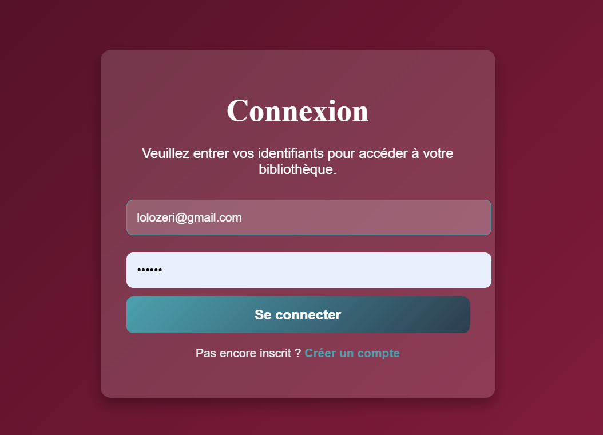
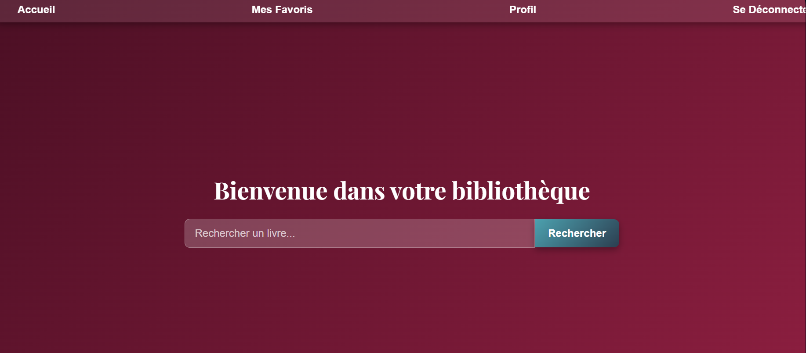
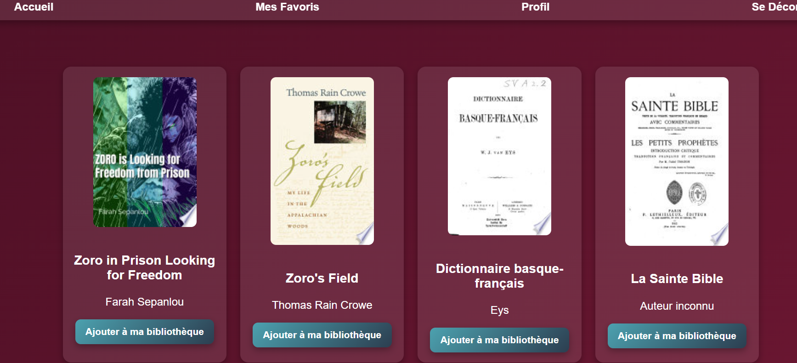

Aperçu du projet







Ce projet est une application web simple de gestion de livres, permettant aux utilisateurs de s'inscrire, de se connecter, et de gérer une liste de leurs livres favoris. L'application est développée en PHP avec une base de données MySQL et utilise PDO pour les interactions avec la base de données. pensé pour un déploiement local
Le projet est organisé avec des fichiers dédiés pour la gestion de la base de données, l'authentification des utilisateurs et les différentes pages de l'application :
database.php : Gère la connexion à la base de données MySQL en utilisant PDO.user.php : Contient la classe `User` pour la logique d'authentification.inscription.php : Gère le processus d'inscription des nouveaux utilisateurs.mes_favoris.php : Affiche et gère la liste des livres favoris de l'utilisateur.style.css : Fichier de style CSS pour l'ensemble de l'application.index.php, accueil.php, profil.php, logout.php) : Gèrent les pages principales de l'application.Ce projet a permis de renforcer la maîtrise du développement web côté serveur avec PHP et MySQL, la gestion des sessions utilisateurs et l'interaction avec une base de données via PDO.
Durant le développement, un incident critique a empêché le lancement de l'application. Voici un résumé simple du diagnostic et de la résolution.
L'application était inaccessible à cause d'une erreur PHP fatale indiquant que le fichier config.php était introuvable.
Le fichier config.php, contenant la clé API, avait été placé dans un mauvais dossier lors d'une réorganisation du projet.
La résolution a consisté à déplacer le fichier config.php à la racine du projet. L'application est redevenue fonctionnelle instantanément. Ce fichier est volontairement exclu de GitHub via le .gitignore pour protéger ma clé API, garantissant ainsi la sécurité des données sensibles du projet tout en assurant son bon fonctionnement en local.
Cliquez sur le bouton pour afficher le document complet qui a servi de base à ce résumé.